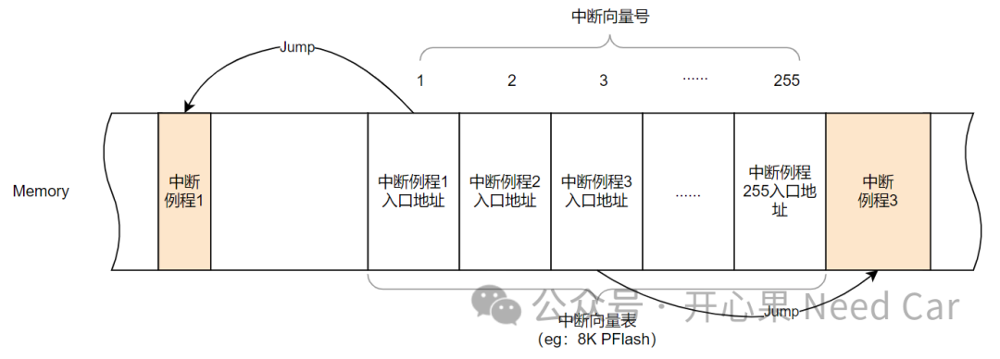
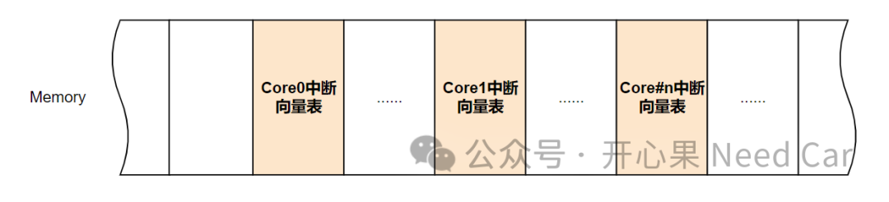
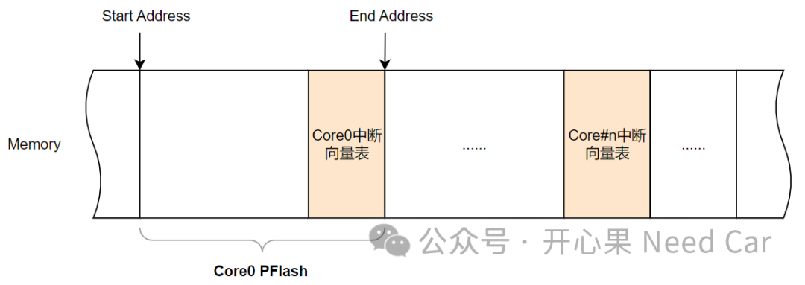
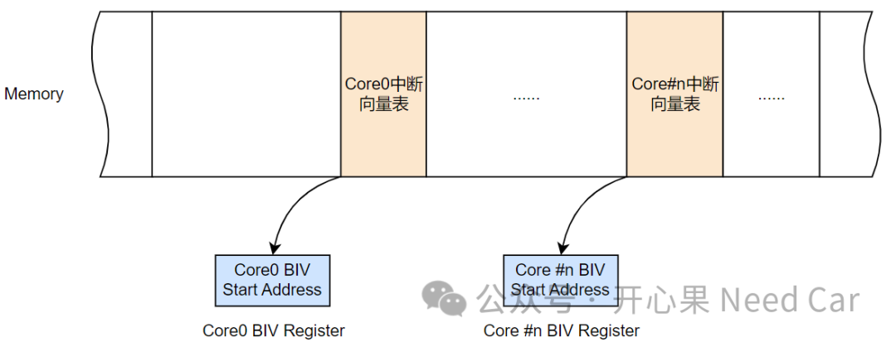

开心果 Need Car · 2024-01-22T12:24:00+08:00 · 微信原文
1、中断向量表
中断向量表的作用是什么呢？答：一般来说，中断向量表用来存储中断服务程序的入口地址。
当程序发生中断以后，CPU根据中断向量号跳转到中断向量表对应位置，之后在该位置处找到对应中断例程的入口地址，进而执行中断例程，示意如下：

2、中断向量表空间

（一）每个Core的中断向量表存放位置
Memory划分时，根据项目情况，为每个Core分配一定的使用空间。中断向量表也不例外，一般，中断向量表放置在PFlash空间。理论上，中断向量表可以放置在所属Core的任何PFlash位置。但是，出于安全性考虑，进行Memory划分时，多数会将中断向量表放置在所属Core的PFlash末端，示意如下：

（二）每个中断向量表的空间大小
中断向量表的大小与每个中断向量实体（entity）占用的空间以及中断的个数有关。比如：Tc3xx支持255个中断，每个中断实体可以配置32 bytes空间。因此，每个Core的中断向量表大小=255*32 bytes = 8160 Bytes。同时，设计中，将中断向量号0作为不可用向量号，也预留一个32 bytes空间。因此，实际用到的中断向量表空间=8160 + 32= 8192 bytes = 0x2000 bytes，即：8 KByte空间。
提示：对于Tricore架构芯片，中断向量号越大，优先级越高。
/* Base interrupt vector table initialized */Ifx_Ssw_MTCR(CPU_BIV, (unsigned int)__INTTAB(0));

如果理解了如上的中断，那么，Trap也就很好理解了。
往期精彩回顾
Autosar网络管理：为什么需要2帧网络管理报文唤醒网络？